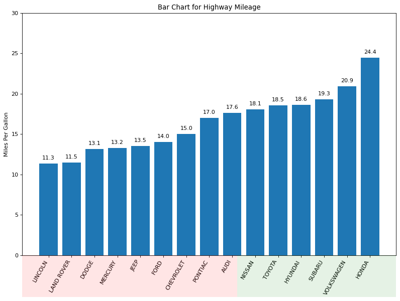
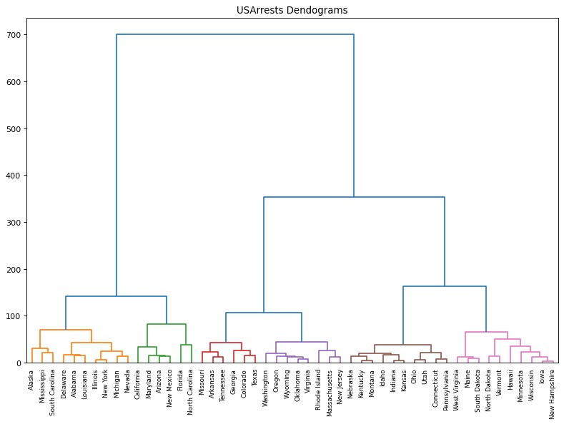
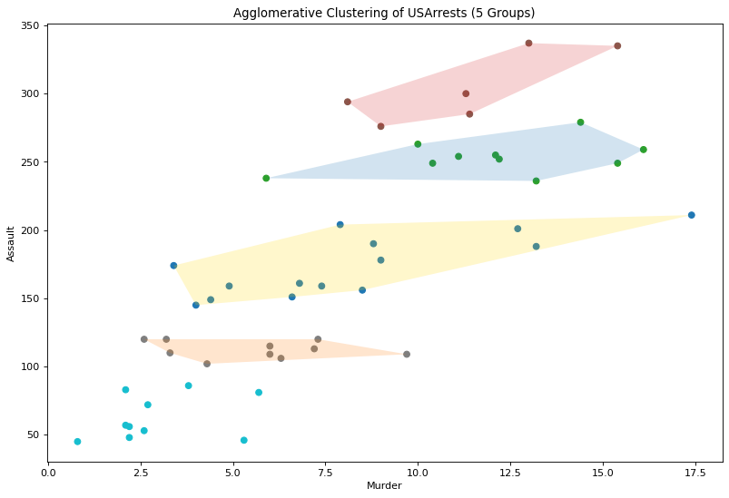
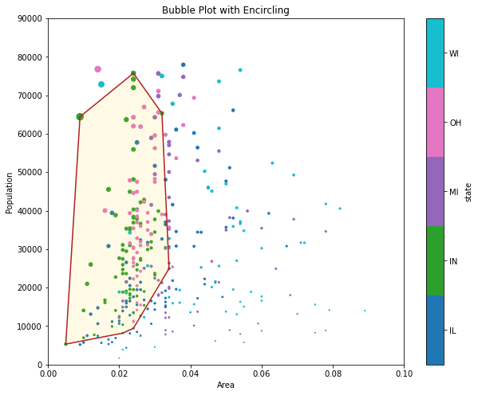
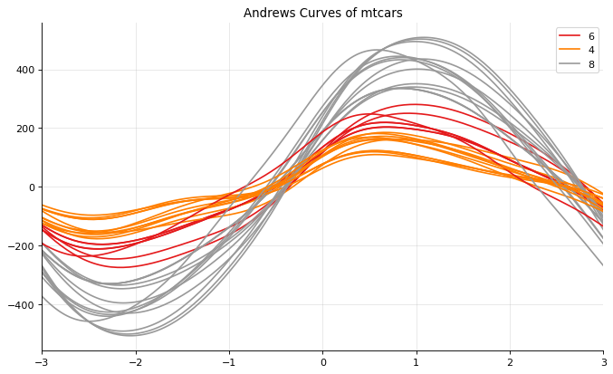
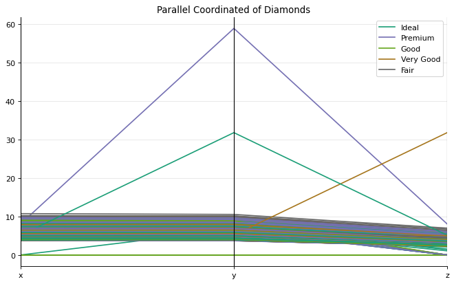

Group
Contents
Group¶
import matplotlib.pyplot as plt
import numpy as np
import pandas as pd
from matplotlib import patches
from scipy.spatial import ConvexHull
Bar¶
mpg = pd.read_csv('../../datasets/stats/mpg.csv')
mpg.head()
| manufacturer | model | displ | year | cyl | trans | drv | cty | hwy | fl | class | |
|---|---|---|---|---|---|---|---|---|---|---|---|
| 0 | audi | a4 | 1.8 | 1999 | 4 | auto(l5) | f | 18 | 29 | p | compact |
| 1 | audi | a4 | 1.8 | 1999 | 4 | manual(m5) | f | 21 | 29 | p | compact |
| 2 | audi | a4 | 2.0 | 2008 | 4 | manual(m6) | f | 20 | 31 | p | compact |
| 3 | audi | a4 | 2.0 | 2008 | 4 | auto(av) | f | 21 | 30 | p | compact |
| 4 | audi | a4 | 2.8 | 1999 | 6 | auto(l5) | f | 16 | 26 | p | compact |
mpg_group = mpg.loc[:, ['cty', 'manufacturer']].groupby('manufacturer').agg(
{'cty': np.mean})
mpg_group.sort_values('cty', inplace=True)
mpg_group.reset_index(inplace=True)
mpg_group.head()
| manufacturer | cty | |
|---|---|---|
| 0 | lincoln | 11.333333 |
| 1 | land rover | 11.500000 |
| 2 | dodge | 13.135135 |
| 3 | mercury | 13.250000 |
| 4 | jeep | 13.500000 |
fig, ax = plt.subplots(figsize=(12, 8), facecolor='white', dpi=80)
x = mpg_group['manufacturer'].str.upper()
y = mpg_group['cty']
ax.bar(x=x, height=y)
for i, cty in enumerate(y):
ax.text(i, cty + 0.5, round(cty, 1), horizontalalignment='center')
p1 = patches.Rectangle((.57, -0.005),
width=.33,
height=.13,
alpha=.1,
facecolor='green',
transform=fig.transFigure)
p2 = patches.Rectangle((.124, -0.005),
width=.446,
height=.13,
alpha=.1,
facecolor='red',
transform=fig.transFigure)
fig.add_artist(p1)
fig.add_artist(p2)
ax.set(ylim=(0, 30),
ylabel='Miles Per Gallon',
title='Bar Chart for Highway Mileage')
plt.setp(ax.get_xticklabels(), rotation=60, horizontalalignment='right')
plt.show()

Dendrogram¶
from scipy.cluster import hierarchy
arrests = pd.read_csv('../../datasets/stats/us_arrests.csv')
arrests.head()
| Murder | Assault | UrbanPop | Rape | State | |
|---|---|---|---|---|---|
| 0 | 13.2 | 236 | 58 | 21.2 | Alabama |
| 1 | 10.0 | 263 | 48 | 44.5 | Alaska |
| 2 | 8.1 | 294 | 80 | 31.0 | Arizona |
| 3 | 8.8 | 190 | 50 | 19.5 | Arkansas |
| 4 | 9.0 | 276 | 91 | 40.6 | California |
_, ax = plt.subplots(figsize=(12, 8), dpi=80)
dend = hierarchy.dendrogram(hierarchy.linkage(
arrests[['Murder', 'Assault', 'UrbanPop', 'Rape']], method='ward'),
labels=arrests.State.values,
color_threshold=100)
ax.set(title="USArrests Dendograms")
plt.show()

Cluster¶
from sklearn.cluster import AgglomerativeClustering
cluster = AgglomerativeClustering(n_clusters=5,
affinity='euclidean',
linkage='ward')
cluster.fit_predict(arrests[['Murder', 'Assault', 'UrbanPop', 'Rape']])
_, ax = plt.subplots(figsize=(12, 8), dpi=80)
ax.scatter(arrests.iloc[:, 0],
arrests.iloc[:, 1],
c=cluster.labels_,
cmap='tab10')
def encircle(x, y, ax=None, **kw):
if not ax:
ax = plt.gca()
p = np.stack([x, y], axis=1)
hull = ConvexHull(p)
poly = plt.Polygon(p[hull.vertices, :], **kw)
ax.add_patch(poly)
facecolors = ['gold', 'tab:blue', 'tab:red', 'tab:orange']
for i, fc in enumerate(facecolors):
encircle(arrests.loc[cluster.labels_ == i, 'Murder'],
arrests.loc[cluster.labels_ == i, 'Assault'],
edgecolor='k',
facecolor=fc,
alpha=0.2,
lw=0)
ax.set(xlabel='Murder',
ylabel='Assault',
title='Agglomerative Clustering of USArrests (5 Groups)')
plt.show()

Encircling¶
midwest = pd.read_csv('../../datasets/stats/midwest_filter.csv')
midwest['popdensity'] = midwest['popdensity'] / 100
midwest['state'] = midwest['state'].astype('category')
midwest.head()
| PID | county | state | area | poptotal | popdensity | popwhite | popblack | popamerindian | popasian | ... | percprof | poppovertyknown | percpovertyknown | percbelowpoverty | percchildbelowpovert | percadultpoverty | percelderlypoverty | inmetro | category | dot_size | |
|---|---|---|---|---|---|---|---|---|---|---|---|---|---|---|---|---|---|---|---|---|---|
| 0 | 561 | ADAMS | IL | 0.052 | 66090 | 12.709615 | 63917 | 1702 | 98 | 249 | ... | 4.355859 | 63628 | 96.274777 | 13.151443 | 18.011717 | 11.009776 | 12.443812 | 0 | AAR | 250.944411 |
| 1 | 562 | ALEXANDER | IL | 0.014 | 10626 | 7.590000 | 7054 | 3496 | 19 | 48 | ... | 2.870315 | 10529 | 99.087145 | 32.244278 | 45.826514 | 27.385647 | 25.228976 | 0 | LHR | 185.781260 |
| 2 | 563 | BOND | IL | 0.022 | 14991 | 6.814091 | 14477 | 429 | 35 | 16 | ... | 4.488572 | 14235 | 94.956974 | 12.068844 | 14.036061 | 10.852090 | 12.697410 | 0 | AAR | 175.905385 |
| 3 | 564 | BOONE | IL | 0.017 | 30806 | 18.121177 | 29344 | 127 | 46 | 150 | ... | 4.197800 | 30337 | 98.477569 | 7.209019 | 11.179536 | 5.536013 | 6.217047 | 1 | ALU | 319.823487 |
| 4 | 565 | BROWN | IL | 0.018 | 5836 | 3.242222 | 5264 | 547 | 14 | 5 | ... | 3.367680 | 4815 | 82.505140 | 13.520249 | 13.022889 | 11.143211 | 19.200000 | 0 | AAR | 130.442161 |
5 rows × 29 columns
midwest_select = midwest.query("state=='IN'")
midwest_select.head()
| PID | county | state | area | poptotal | popdensity | popwhite | popblack | popamerindian | popasian | ... | percprof | poppovertyknown | percpovertyknown | percbelowpoverty | percchildbelowpovert | percadultpoverty | percelderlypoverty | inmetro | category | dot_size | |
|---|---|---|---|---|---|---|---|---|---|---|---|---|---|---|---|---|---|---|---|---|---|
| 83 | 663 | ADAMS | IN | 0.021 | 31095 | 14.807143 | 30530 | 36 | 42 | 60 | ... | 4.862299 | 30490 | 98.054350 | 11.636602 | 17.194524 | 9.101888 | 8.714027 | 1 | AAU | 277.642023 |
| 84 | 665 | BARTHOLOMEW | IN | 0.022 | 63657 | 28.935000 | 61774 | 1005 | 97 | 610 | ... | 6.844097 | 62784 | 98.628588 | 8.545171 | 10.736855 | 6.992420 | 10.811943 | 0 | AAR | 457.463283 |
| 85 | 666 | BENTON | IN | 0.024 | 9441 | 3.933750 | 9389 | 6 | 16 | 1 | ... | 4.014538 | 9300 | 98.506514 | 8.043011 | 8.349218 | 6.842329 | 10.502283 | 0 | AAR | 139.244020 |
| 86 | 667 | BLACKFORD | IN | 0.010 | 14067 | 14.067000 | 13978 | 7 | 44 | 16 | ... | 4.428124 | 13903 | 98.834151 | 9.853988 | 12.323745 | 8.332247 | 10.937500 | 0 | AAR | 268.221385 |
| 87 | 668 | BOONE | IN | 0.024 | 38147 | 15.894583 | 37814 | 83 | 90 | 94 | ... | 8.813967 | 37402 | 98.047029 | 6.296455 | 8.021754 | 5.239599 | 7.089425 | 1 | HLU | 291.483110 |
5 rows × 29 columns
_, ax = plt.subplots(figsize=(10, 8))
midwest.plot.scatter(x='area',
y='poptotal',
c='state',
s='popdensity',
cmap='tab10',
ax=ax)
# Encircling
def encircle(x, y, ax=None, **kw):
ax = ax or plt.gca()
p = np.stack([x, y], axis=1)
hull = ConvexHull(p)
poly = patches.Polygon(xy=p[hull.vertices, :], closed=True, **kw)
ax.add_patch(poly)
ax.set(xlim=(0.0, 0.1),
ylim=(0, 90000),
xlabel='Area',
ylabel='Population',
title='Bubble Plot with Encircling')
x = midwest_select['area']
y = midwest_select['poptotal']
# Draw polygon surrounding vertices
encircle(x, y, ec='k', fc='gold', alpha=0.1, ax=ax)
encircle(x, y, ec='firebrick', fc='none', lw=1.5, ax=ax)
plt.show()

Andrews Curve¶
from pandas.plotting import andrews_curves
mtcars = pd.read_csv("../../datasets/stats/mtcars.csv")
mtcars.head()
| mpg | cyl | disp | hp | drat | wt | qsec | vs | am | gear | carb | fast | cars | |
|---|---|---|---|---|---|---|---|---|---|---|---|---|---|
| 0 | 4.582576 | 6 | 160.0 | 110 | 3.90 | 2.620 | 16.46 | 0 | 1 | 4 | 4 | 1 | Mazda RX4 |
| 1 | 4.582576 | 6 | 160.0 | 110 | 3.90 | 2.875 | 17.02 | 0 | 1 | 4 | 4 | 1 | Mazda RX4 Wag |
| 2 | 4.774935 | 4 | 108.0 | 93 | 3.85 | 2.320 | 18.61 | 1 | 1 | 4 | 1 | 1 | Datsun 710 |
| 3 | 4.626013 | 6 | 258.0 | 110 | 3.08 | 3.215 | 19.44 | 1 | 0 | 3 | 1 | 1 | Hornet 4 Drive |
| 4 | 4.324350 | 8 | 360.0 | 175 | 3.15 | 3.440 | 17.02 | 0 | 0 | 3 | 2 | 1 | Hornet Sportabout |
mtcars.drop(['cars'], axis=1, inplace=True)
_, ax = plt.subplots(figsize=(10, 6), dpi=80)
andrews_curves(mtcars, 'cyl', colormap='Set1')
ax.spines[['top', 'right']].set_visible(False)
ax.set(title='Andrews Curves of mtcars', xlim=(-3, 3))
ax.grid(alpha=0.3)
plt.show()

Parallel Coordinates¶
from pandas.plotting import parallel_coordinates
diamonds = pd.read_csv('../../datasets/stats/diamonds.csv')
diamonds.head()
| carat | cut | color | clarity | depth | table | price | x | y | z | |
|---|---|---|---|---|---|---|---|---|---|---|
| 0 | 0.23 | Ideal | E | SI2 | 61.5 | 55.0 | 326 | 3.95 | 3.98 | 2.43 |
| 1 | 0.21 | Premium | E | SI1 | 59.8 | 61.0 | 326 | 3.89 | 3.84 | 2.31 |
| 2 | 0.23 | Good | E | VS1 | 56.9 | 65.0 | 327 | 4.05 | 4.07 | 2.31 |
| 3 | 0.29 | Premium | I | VS2 | 62.4 | 58.0 | 334 | 4.20 | 4.23 | 2.63 |
| 4 | 0.31 | Good | J | SI2 | 63.3 | 58.0 | 335 | 4.34 | 4.35 | 2.75 |
_, ax = plt.subplots(figsize=(10, 6), dpi=80)
parallel_coordinates(frame=diamonds.loc[:, ['cut', 'x', 'y', 'z']],
class_column='cut',
colormap='Dark2',
ax=ax)
ax.spines[['top', 'right']].set_visible(False)
ax.set(title='Parallel Coordinated of Diamonds')
ax.grid(alpha=0.3)
plt.show()
